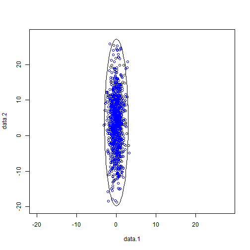
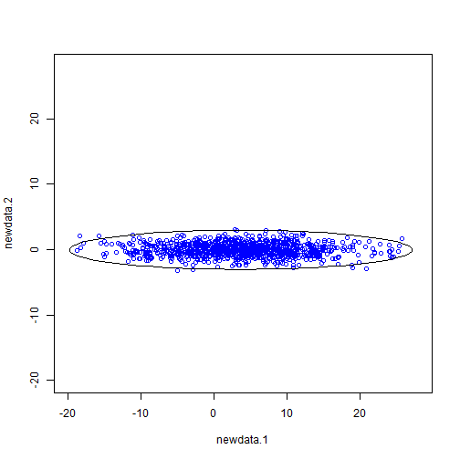

- Goal
-- Generate a desinated number of two-dimensional samples with Gaussian distribution
-- Rotate the samples with a desinated angle
-- Be emcompassed by an ellipse
Tingyao WU
-- Generate a desinated number of two-dimensional samples with Gaussian distribution
-- Rotate the samples with a desinated angle
-- Be emcompassed by an ellipse
-- PDF: \(p(\mathbf{x})=(2\pi)^{-\frac{k}{2}}|\Sigma|^{-\frac{1}{2}}e^{-\frac{1}{2}(\mathbf{x}-\mathbf{\mu})^{t} {\Sigma}^{-1}(\mathbf{x}-\mathbf{\mu})}\)
Suppose the orignial sample is at \((x,y)\), after rotation with \(\theta\) degree, the new sample \((x',y')\) is at
\(x'=x\times{\cos(\theta)}+y\times{\sin(\theta)}\),
\(y'=-x\times{\sin(\theta)}+y\times{\cos(\theta)}\)

